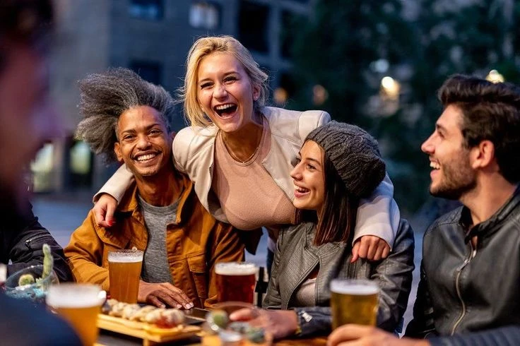
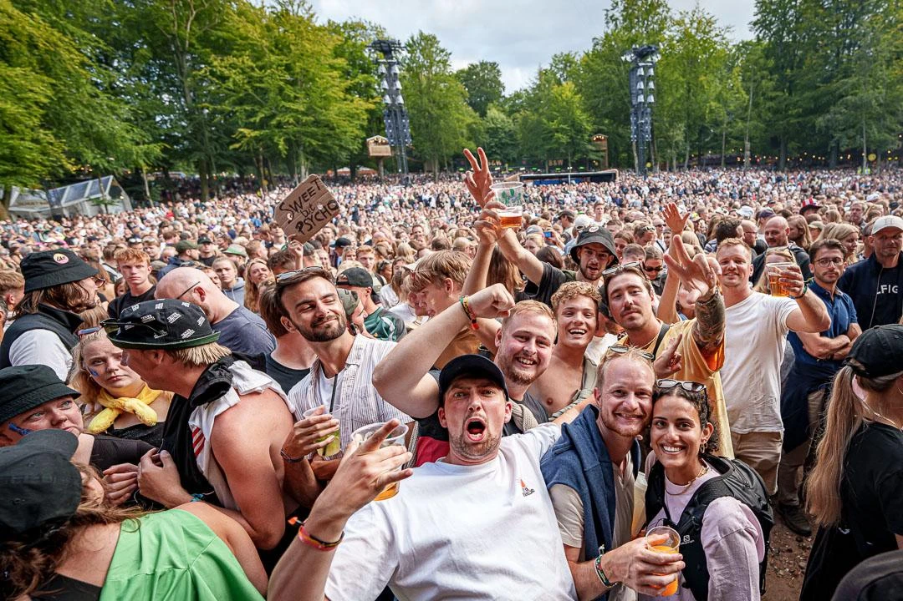

BRYGHUSET ZEROBUZZ BREW
I hjertet af Viby J, en lille by med stor sjæl og sammenhold, findes et bryghus med en historie, der er lige så inspirerende som deres produkter. ZeroBuzz Brew blev grundlagt for et par år siden af to passionerede søskende, den 30 årige Freja og den 27 årige Kasper. Deres mission var enkel, men ambitiøs: At skabe alkoholfri øl, der bringer folk sammen uden at nogen skal føle sig udenfor.
Begyndelsen
Freja og Kasper voksede op i en familie, hvor fællesskab og hygge altid var i højsædet. Det var her, Freja og Kasper lærte vigtigheden af sammenhold og at skabe et inkluderende miljø. Men da de blev ældre, bemærkede de, at mange sociale begivenheder ofte kredsede omkring alkohol. De så venner og bekendte, der af forskellige grunde valgte ikke at drikke, føle sig ekskluderet fra fællesskabet.
Visionen
Inspireret af deres barndoms minder og med en stærk passion for brygning, besluttede Freja og Kasper at skabe en løsning. De ville lave en alkoholfri øl, der ikke gik på kompromis med smagen, og som kunne nydes af alle – uanset om man valgte at drikke alkohol eller ej. Sådan blev ZeroBuzz Brew født. Deres mål var klart: At skabe et produkt, der kunne samle folk og skabe fællesskab, hvor ingen skulle føle sig udenfor.
Det Første Bryg
Efter mange måneders eksperimentering og utallige smagsprøver fandt de endelig den perfekte opskrift. Deres første bryg, "Sommer Session", blev hurtigt en favorit blandt både alkohol-drikkere og dem, der foretrak alkoholfrit. Denne lyse lette sommer øl skabte rygtet om denne unikke øl, som hurtigt spredte sig, og ZeroBuzz Brew begyndte at få opmærksomhed langt ud over Viby J's grænser.
Samarbejde med Festivaler
En af de store milepæle for ZeroBuzz Brew var, da de indledte et samarbejde med Smukfest, en af Danmarks mest elskede musikfestivaler i 2023. Freja og Kasper var stolte over at se deres øl blive en del af festivalens tilbud, og det var en kæmpe succes. Festivalgæsterne elskede muligheden for at nyde en lækker øl uden alkohol og stadig være en del af festlighederne. Det markerede begyndelsen på flere samarbejder med andre festivaler og arrangementer rundt om i landet i fremtiden.
Fremtiden
ZeroBuzz Brew fortsætter med at vokse og udvikle nye spændende smagsvarianter. Freja og Kasper arbejder tæt sammen med lokale producenter for at sikre, at deres ingredienser er af højeste kvalitet og bæredygtige. De er også engagerede i at støtte lokalsamfundet og skabe flere sociale initiativer, hvor deres øl kan være med til at styrke fællesskabet.
Freja og Kaspers drøm om at skabe et inkluderende og venligt bryghus er blevet til virkelighed. ZeroBuzz Brew er mere end bare en alkoholfri øl – det er en fejring af sammenhold, fællesskab og den glæde, der kommer fra at være en del af noget større. I Viby J og langt ud over, er ZeroBuzz Brew blevet et symbol på, at alle kan være med, og at fællesskabet smager bedst, når alle er inkluderet.